Année
Domaine
.png)
Traitement de données à grande échelle
Pipeline de traitement Big Data : ingestion, nettoyage, modélisation et analyse à grande échelle sur un jeu de données réel de tweets.
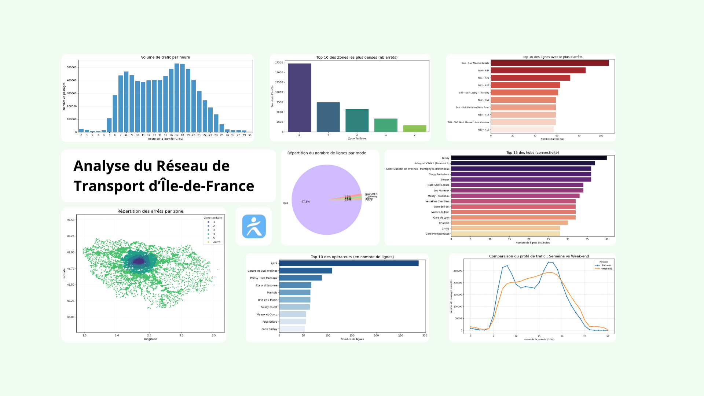
Analyse distribuée avec PySpark
Traitement et agrégation d'un dataset volumineux via Apache Spark en Python, puis calcul de métriques et exploration statistique.
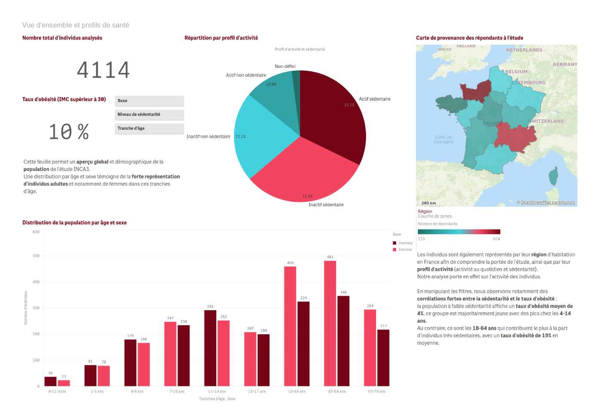
Dashboard décisionnel — QlikSense
Création d'un tableau de bord interactif sous QlikSense pour l'analyse et le reporting de données liées à l'alimentation et au sport.
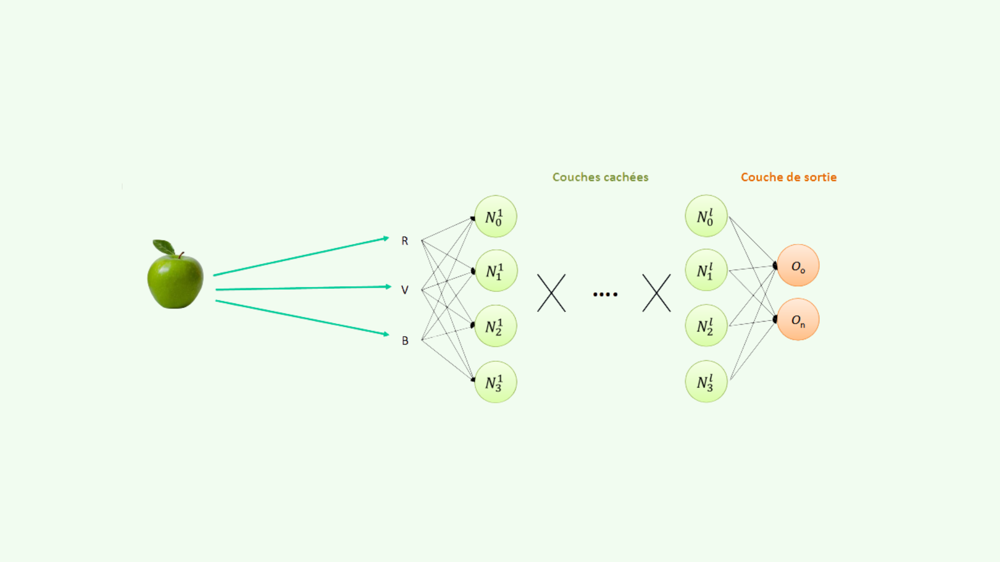
Modélisation par réseau de neurones
Implémentation et entraînement d'un réseau de neurones pour la classification de données réelles, avec la comparaison de 2 modèles.
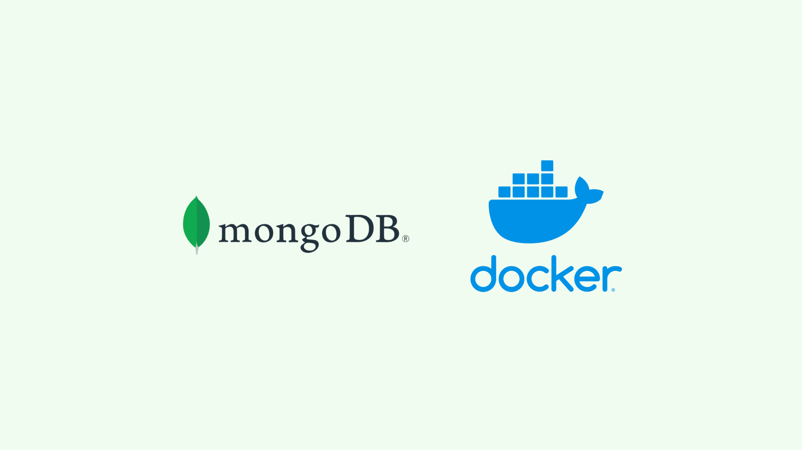
Gestion de données NoSQL — MongoDB
Migration d'une base orientée SQL à NoSQL et requêtes d'agrégation pour l'analyse de données via une application Streamlit.
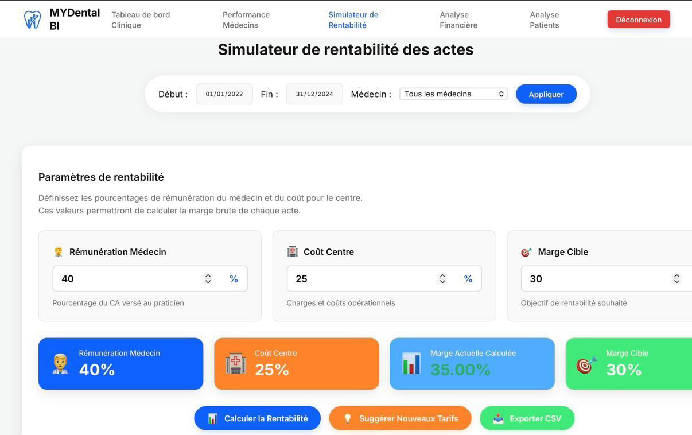
MyDentalBi — Application BI dentaire
Application web de Business Intelligence dédiée au secteur dentaire : visualisation et analyse de données cliniques via une interface interactive.
Programmation web données Airbnb
Création d'un site web dynamique pour la visualisation des données Airbnb des logements de la ville de Paris, grâce à des graphiques variés et interactifs.
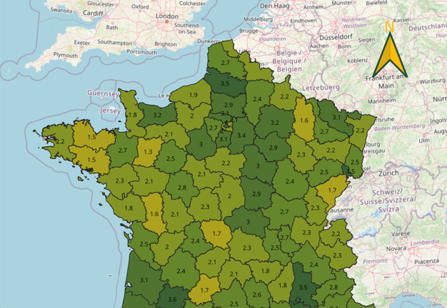
Étude SIG de l'implantation des McDonald's en France
Étude de l'implantation des restaurants McDonald's en France, à partir d'une base de données SIG.
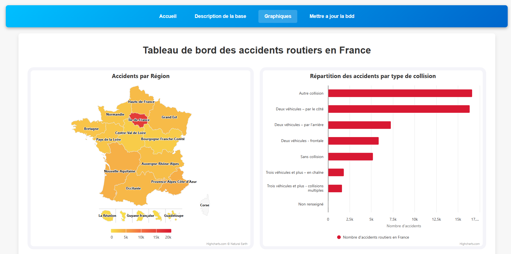
Site web dynamique accidentologie
Création d'un site web dynamique pour la visualisation des accidents corporels, à partir d'une base de données OpenData.
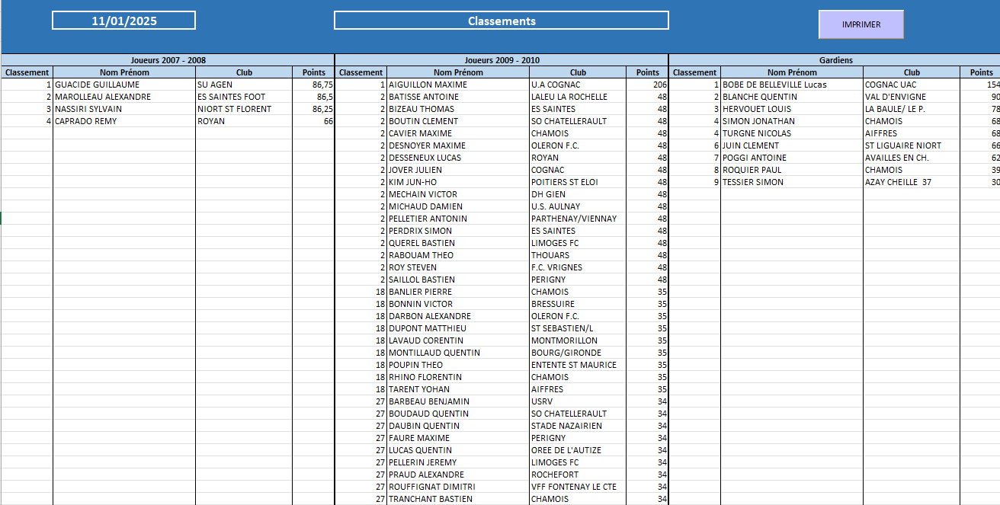
Recrutement section sportive football
Application de saisie des performances des candidats le jour du recrutement pour établir un classement et sélectionner les meilleurs.
Étude des enjeux économiques de la Norvège
Analyse statistique des importations norvégiennes, afin de prévoir les évolutions économiques de la Norvège et de ses partenaires commerciaux.
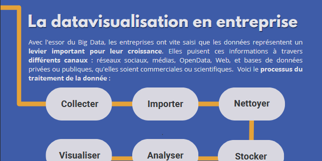
Poster scientifique sur la Data visualisation
Réalisation d'un poster scientifique sur la Data visualisation, à l'occasion de la fête de la science.
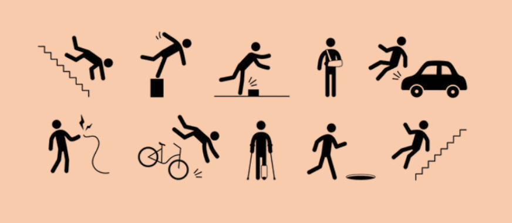
Projet final, analyse de données et reporting Calyxis
Analyse de données et reporting pour Calyxis, observatoire spécialisé dans les accidents de la vie courante.
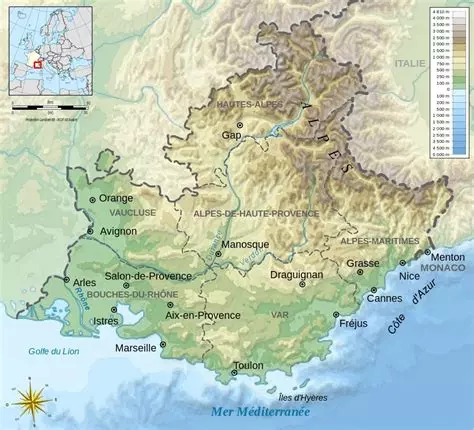
Échantillonnage et estimation région Provence-Alpes-Côte d'Azur
Étude d'examination de la population de la région Provence-Alpes-Côte d'Azur, grâce à la réalisation d'un échantillonnage et d'une estimation de la population.
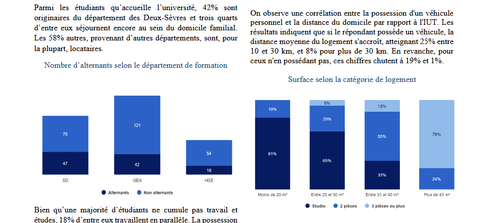
Étude logements étudiants Université de Poitiers
Étude de la situation de logement des étudiants de l'Université de Poitiers, à partir des données d'une enquête.
Étude chiffre d'affaires de la société Poujoulat
Étude du chiffre d'affaires de la société Poujoulat.

Modèles de régression sous R
Réalisation d'une étude statistique et mise en place de modèles de régression avec le langage R.